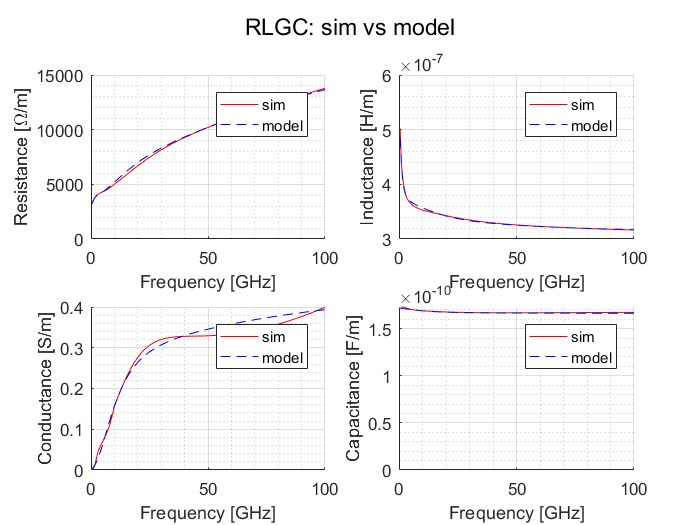
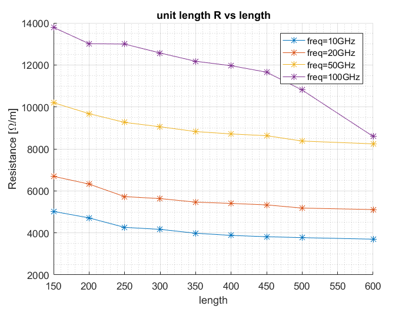
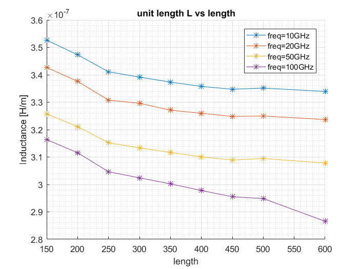
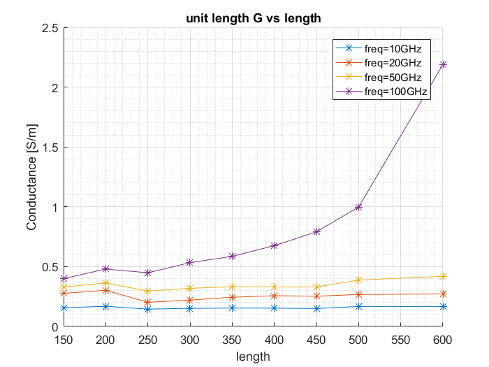
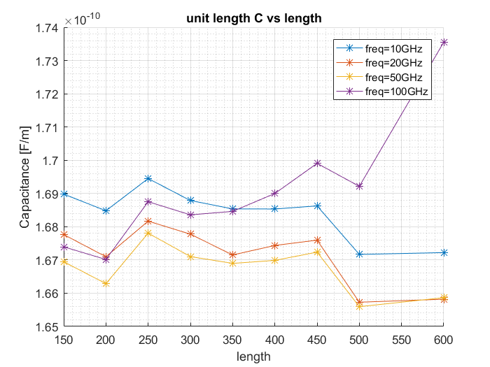
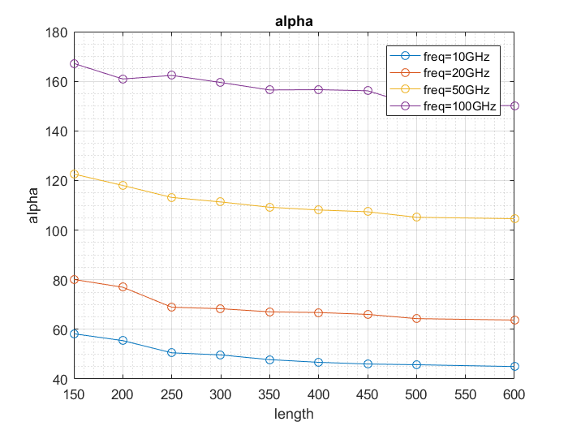
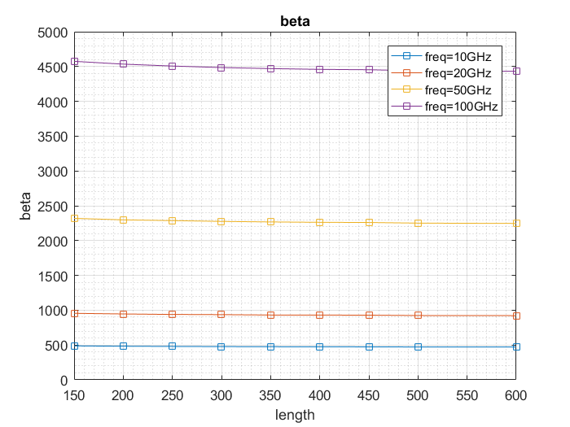
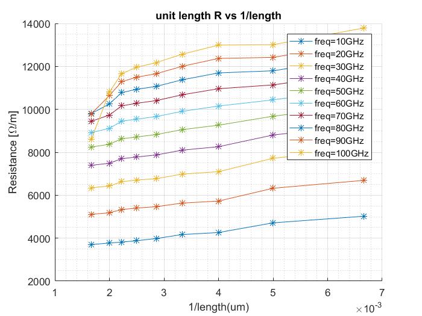
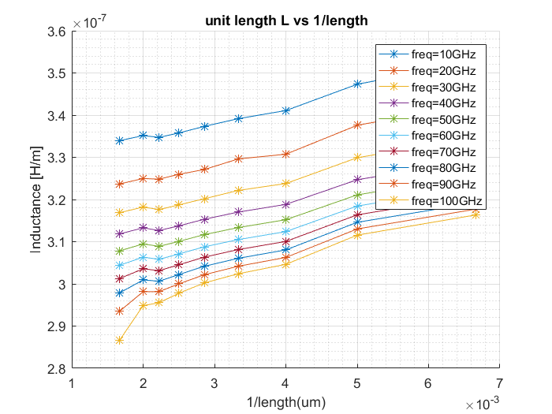

Contents
不考虑分端口效应
clear;close all
dbstop if error;
len = [150,200,250,300,350,400,450,500,600];
len_pi = 12.5*1e-6;
space = 4;
width = 4;
totalmodel = new_files_info_total();
for k = 1:length(len)
totalmodel(k).name=sprintf('../S_parameters_sim/width/W%d/L%dW%dS%d.csv',width,len(k),width,space);
totalmodel(k).length = len(k)*1e-6;
totalmodel(k).width = width*1e-6;
totalmodel(k).space = space*1e-6;
totalmodel(k).len_pi =len_pi ;
totalmodel(k).num_pi = ceil(totalmodel(k).length/totalmodel(k).len_pi-1e-6);
totalmodel(k) = model_total( totalmodel(k));
totalmodel(k) = totalmodel_err( totalmodel(k));
end
plot_RLGC_double(totalmodel(1).freq,totalmodel(1).RLGC_sim,totalmodel(1).RLGC_fit,...
{'sim','model'},'RLGC: sim vs model',{'-r','--b'});
RLGC_sim_unit = [totalmodel.RLGC_sim];
gamma_sim = [totalmodel.gamma_sim];
alpha_sim = real(gamma_sim);
beta_sim = imag(gamma_sim);

RLGC unit length vs length
freq_ind = [20 40 100 200];
str_title = {'R','L','G','C'};
str_label = {'Resistance [\Omega/m]','Inductance [H/m]',...
'Conductance [S/m]','Capacitance [F/m]'};
str_lengend = cell(1,4);
for m =1:length(freq_ind)
str_lengend{m} = ['freq=',num2str(freq_ind(m)/2),'GHz'];
end
for m =1:4
figure
hold on
plot(len,RLGC_sim_unit(freq_ind ,m:4:end),'-*');
title(['unit length ',str_title{m},' vs length']);
xlabel('length');
ylabel(str_label{m});
legend(str_lengend);
grid on
grid minor
hold off
end
   
alpha beta VS length under different frequency
figure
plot(len,alpha_sim(freq_ind,:),'-o');
title('alpha');
xlabel('length');
ylabel('alpha');
legend(str_lengend);
grid on
grid minor
figure
plot(len,beta_sim(freq_ind,:),'-s');
title('beta');
xlabel('length');
ylabel('beta');
legend(str_lengend);
grid on
grid minor
 
consider the port
freq_ind = 20:20:200;
for m =1:length(freq_ind)
str_lengend{m} = ['freq=',num2str(freq_ind(m)/2),'GHz'];
end
for m =1:2
figure
hold on
plot(1./len,RLGC_sim_unit(freq_ind ,m:4:end),'-*');
title(['unit length ',str_title{m},' vs 1/length']);
xlabel('1/length(um)');
ylabel(str_label{m});
legend(str_lengend);
grid on
grid minor
hold off
end
 